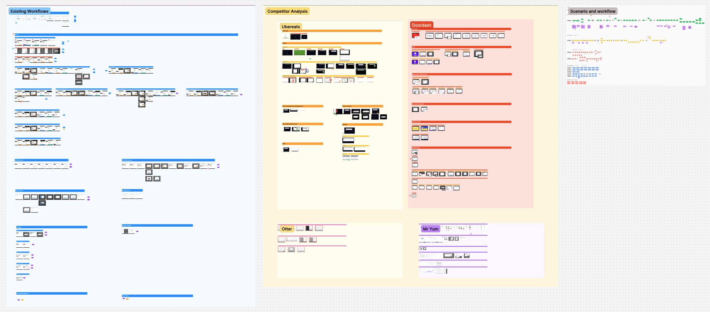
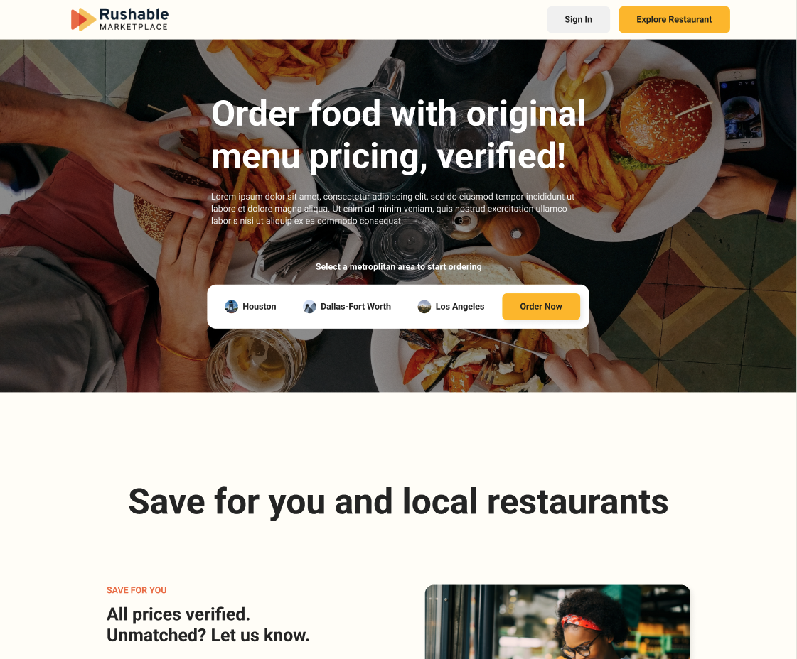

Restaurant Operations: Redesigned a High-Volume POS to Reduce Cognitive Load and Conceptualized a Zero-Commission Marketplace for Rushable
[01 Background]
About Rushable
Rushable is an all-in-one digital operating system for restaurants, offering commission-free online ordering, marketing automation, and POS-integrated management tools to help owners bypass third-party delivery fees.

My Role
During the time when I was a freelance designer, I helped tackle two distinct challenges for Rushable: streamlining chaotic restaurant operations and designing a consumer discovery platform.
Confidentiality Note: To comply with NDA requirements, this case study omits proprietary business information and uses publicly available images.
[02 Project 1]
Reducing Cognitive Load in High-Volume POS
Challenge
Critical order details, special requests, and prep-time controls were hidden or inefficient, leading to missed instructions and delayed pickups during high-volume service periods.

Solution
Further segregated different levels of data into a multi-panel layout; introduced an additional mode for automated time adjustment, and architected the hierarchy of special versus normal sections to surface critical information at the right moment.

Outcome
Addressed top sales-reported friction points, reducing customer complaints and improving order processing efficiency during peak service periods.
[03 Project 2]
The Zero Commission Marketplace
Opportunity
Create a consumer-facing search engine to drive order traffic directly to restaurants without charging them the high commissions that third-party platforms impose.
Strategy
Conceptualized a lightweight discovery funnel that prioritized price transparency as a unique value proposition — positioning Rushable's marketplace as the ethical alternative to commission-heavy aggregators.

Outcome
Although the project was paused to prioritize B2B features, the design established the UX framework for Rushable's long-term consumer acquisition strategy.